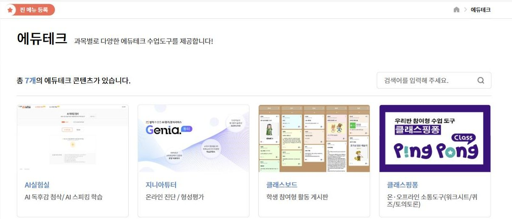
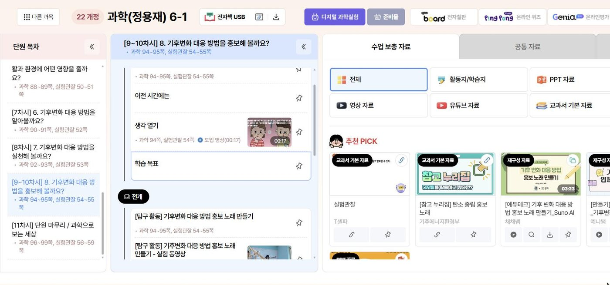
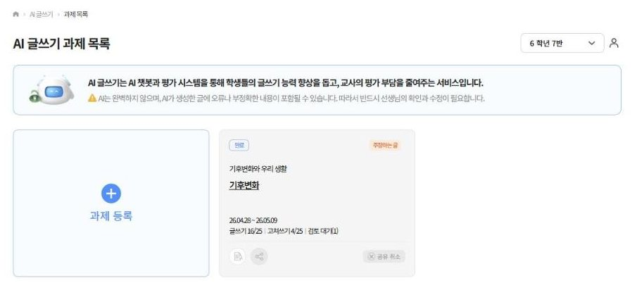
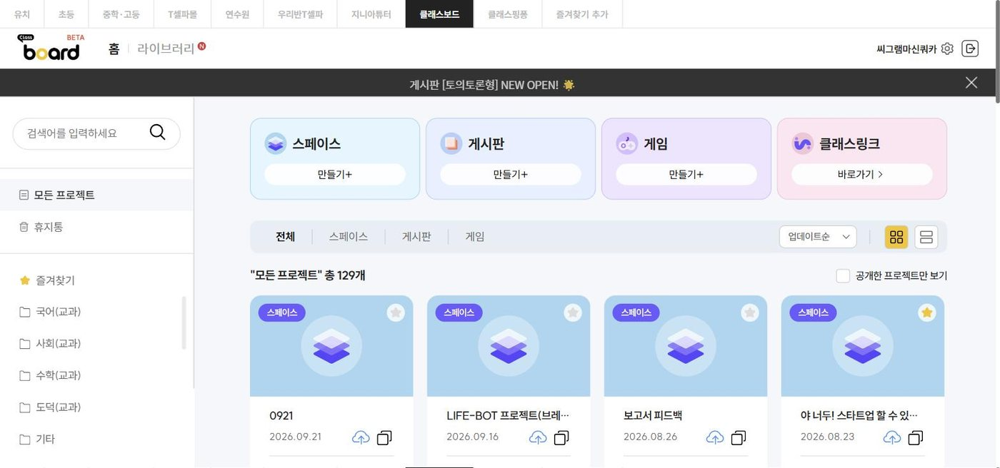
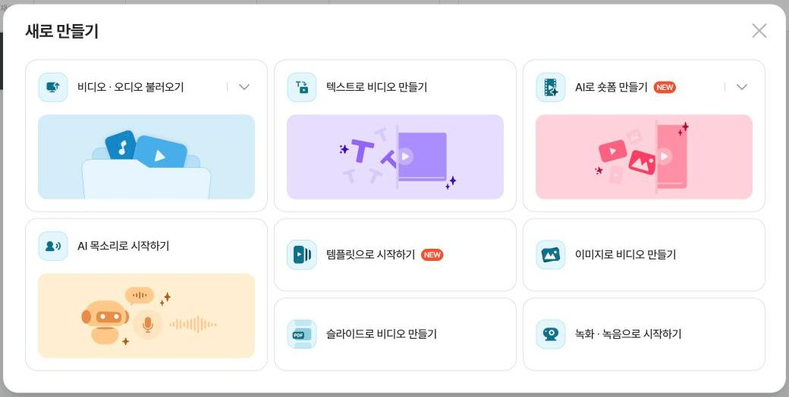

AI 영상이 미디어교육이 되는 순간. 40분 뒤 선생님 손에는 「나의 첫 AI 영상 설계도」 한 장이 남아요.
2026.10.24(토) 13:00가산디지털단지 천재교육쿼카연구회 · 김햇살
→ 키나 스페이스로 넘겨요 · N 발표자 대본 · T 설계 타이머 · M 목차 · B 배경음악 · F 전체화면
쿼카연구회가 만든 AI 영상 · 추석 인사
오늘의 편성표 · 40분
앞 20분은 '왜', 뒤 20분은 선생님이 직접 써요
13:0013:1513:2313:3713:40
13:40
쉬는 시간 15분
설계도를 클래스보드에 올리고, 브루에 로그인해 두세요.
13:55
브루 연수 시작
같은 자리에서 이어서 해요. 노트북과 설계도만 있으면 돼요.
약 2시간
1분 영상 완성
오늘 정한 주제로 만들어 상영회까지 해요.
워밍업 퀴즈
이 5초 영상, 만드는 데 얼마나 걸렸을까요?
AI 생성 · Kling 3.0
카메라도, 쿼카도, 촬영장도 없었어요. 걸린 시간은?
정답은 ① 몇 분이에요프롬프트 몇 줄을 쓰고 생성을 잠깐 기다린 게 전부예요. 그래서 이제 질문이 바뀌어요. 우리 학생들은 이런 영상을 가려낼 수 있을까요?
EP.01 · 왜 만들어 봐야 할까
이 영상은 실제로 촬영한 걸까요?
가을 아침 안개 낀 계곡. 드론으로 찍은 진짜 영상일까요?
손 든 사람
정답: AI로 만든 영상이에요영어 프롬프트 몇 줄로 5초 분량을 만들었어요. 가려낼 때는 이런 곳을 봐요.
빛과 그림자 방향이 한결같은지
나무·돌 모양이 비슷하게 반복되지 않는지
물살의 움직임이 자연스러운지
출처·촬영 정보(메타데이터)가 있는지
근거 ① 만들어 본 경험과 판별력
만들어 보고 단서를 배우면, 눈이 밝아져요
사람의 AI 합성물 판별 정확도
메타분석 · 세로선은 우연 수준 50%
출처: Diel et al., 2024, Computers in Human Behavior Reports · 논문 56편, 86,155명
55.5%
사람의 평균 판별 정확도. 거의 동전 던지기 수준이에요.
65.1%
정답과 단서를 알려 주는 피드백 훈련을 받은 뒤
교실로 옮기면 직접 만들어 보고, 친구 영상에서 AI 장면을 찾고, 정답과 단서를 함께 확인하는 수업이에요.
근거 ② 학생의 매체 환경
학생은 이미 보고, 쓰고, 만들고 있어요
숏폼 주 1회 이상 이용91.0%매일 보는 10대도 49.1%예요한국언론진흥재단, 2025 10대 청소년 미디어 이용 조사
생성형 AI 주간 이용67.6%초 51.2% · 중 69.8% · 고 82.3%같은 조사
직접 찍은 영상을 올려 봤어요30.3%중학생이 34.0%로 가장 높아요같은 조사
학생은 이미 만드는 쪽에 서 있어요. 미디어교육도 '보고 판단하기'에서 '만들며 판단하기'로 옮겨 갈 때예요.
근거 ③ 다양성의 역설
AI 아이디어를 받으면 좋아지지만, 서로 닮아 가요
+8.1%
개인 작품의 참신성
AI 아이디어를 받은 사람의 이야기가 더 새롭다는 평가를 받았어요.
+10.7%
작품끼리의 유사도
그런데 AI 도움을 받은 이야기들은 서로 더 비슷해졌어요.
1단계
혼자 먼저 생각해요 메시지 한 문장은 사람이 정해요
2단계
모둠·짝과 나눠요 서로 다른 생각을 겹쳐 봐요
3단계
AI는 그다음에 장면·목소리·자막을 맡겨요
출처: Doshi & Hauser, 2024, Science Advances
미디어교육과 잇는 틀 · PISA 2029 미디어·AI 리터러시
AI 영상을 만드는 과정이 곧 미디어교육이에요
칸을 누르면 근거가 보여요. 통계 상관계수가 아니라 조사 자료를 바탕으로 판단한 연결 강도(약·중·강)예요.
약: 간접 연결중: 활동에 따라 연결강: 이 단계의 핵심 역량
LAB 1/5기획 · 브루로 직접 만들고, 한 번에 한 가지만 바꿨어요
무엇을·누구에게를 먼저 정하면, AI 영상이 수업 영상이 돼요
A주제 칸에 한 단어만33초
입력기후변화 대본 프롬프트는 비워 둠
결과'~습니다' 뉴스 말투, 출처 없는 숫자(1.4도·420ppm·70%…), 빨간 경고 계기판 같은 이미지, '슈퍼 엘니뇨' 같은 어려운 말
B설계도 한 줄을 넣었더니31초
입력메시지 기후변화 대응은 우리 반의 작은 선택에서 시작돼요 + 대상(6학년 도입)·네 장면·질문으로 끝내기
결과뜨거운 운동장 → 달아오른 지구 → 급식·등굣길 → 손 드는 교실. 질문으로 끝나요
발문둘 중 우리 반 수업 도입에 바로 틀 수 있는 영상은? 무엇이 달라서일까요?
만들어 보면 좋은 점 · 기획력목적·대상·메시지를 먼저 정하는 힘이 생겨요. 사람이 정하지 않으면 AI가 대신 정해요. 뉴스 말투, 출처 없는 숫자, 어려운 말로요.
LAB 1 제작 레시피
브루 웹 4.6.3 · 2026.9.25 제작
클릭 순서 (A·B 똑같이)
새로 만들기›텍스트로 비디오 만들기›① 스타일 없이 바로 시작하기›② 대본 작성: 주제·대본 프롬프트 입력 → AI 글쓰기›③ 비디오 꾸미기(기본값)›완료 → 확인
A에 넣은 글
주제기후변화
대본 프롬프트(비워 둠) · 글자 수 300자
A · AI가 쓴 대본 (33초)
우리가 직면한 기후변화는 이제 상상 이상의 속도로 다가오고 있습니다. 지구 평균 기온은 이미 산업화 이전 대비 1.4도 상승했고 대기 중 이산화탄소 농도는 420피피엠을 넘어섰습니다. 유엔은 1.5도 목표 달성이 사실상 어렵다고 경고하며 향후 슈퍼 엘니뇨까지 겹쳐 극단적인 폭염과 가뭄이 우려되는 상황입니다. 북극 얼음 면적은 70퍼센트 이상 줄어들었고 해수면 온도는 역대 최고 수준을 기록하고 있습니다. 이를 해결하기 위해 우리는 재생에너지로의 과감한 전환과 화석연료 감축을 서둘러야 합니다.
빨간 표시는 출처·기준이 없는 숫자예요. 북극 얼음은 면적인지 부피인지, 어느 계절 기준인지에 따라 숫자가 크게 달라져요. 이미지도 살펴보세요. 1.4도 장면의 계기판에는 이산화탄소가 423ppm, 바로 다음 장면에는 420ppm으로 그려져 있어요. 그래프는 2030년까지 이어지고, 제목 글자(TEMPERATURE)도 뭉개져 있어요. AI가 그럴듯하게 지어낸 숫자와 글자라서, 학생들과 '가짜 단서 찾기'를 하기 딱 좋아요.
B에 넣은 글 (설계도 한 줄)
주제기후변화 대응은 우리 반의 작은 선택에서 시작돼요
대본 프롬프트초등학교 6학년 과학 수업 도입에서 틀 1분 영상이에요. 초등학생에게 말하듯 쉬운 말과 짧은 문장으로 써 줘. 네 장면 순서로: 1) 폭염으로 텅 빈 학교 운동장 2) 온실가스가 담요처럼 지구를 덮는 모습 3) 급식 남기지 않기, 걸어서 등교하기 같은 우리 반의 선택 4) 마지막 문장은 '우리 반은 무엇을 바꿀 수 있을까?' 질문으로 끝내 줘.
B · AI가 쓴 대본 (31초)
따가운 햇살 아래 텅 빈 학교 운동장을 보세요. 너무 더워서 친구들과 뛰어놀 수도 없어요. 왜 이렇게 날씨가 뜨거워진 걸까요? 바로 지구를 둘러싼 온실가스가 두꺼운 담요처럼 열을 가두고 있기 때문이에요. 하지만 너무 걱정하지 마세요. 우리에게는 지구를 구할 방법이 있거든요. 오늘부터 급식을 남기지 않고 다 먹고, 가까운 거리는 걸어서 등교해 보는 건 어떨까요? 우리의 작은 선택이 모이면 뜨거워진 지구를 시원하게 식힐 수 있어요. 자, 우리 반은 오늘부터 무엇을 바꿀 수 있을까요?
네 장면과 마지막 질문이 그대로 들어왔어요. 다만 이 초안에도 고칠 곳이 있어요. LAB 2에서 이어서 봐요.
③ 비디오 꾸미기 설정 (다섯 실험 공통 기본값)
화면 비율
16:9 (LAB 5 쇼츠만 9:16)
자막
하단 · 길게
AI 목소리
KKC
배경음악
분위기 '활기찬' → 곡은 브루가 자동으로 골라 줘요
AI 이미지
켬 · GPT Image 2 Low (이미지 1장에 5크레딧)
고화질·무료 비디오
끔
크레딧 다섯 실험(영상 6편)에 모두 176크레딧을 썼어요. AI 이미지 160(장당 5) + AI 목소리 16이에요. 대본 쓰기와 고치기, 무료 비디오에는 크레딧이 들지 않았어요. 비교 원칙 한 번에 한 가지만 바꿨어요. 그래야 달라진 이유를 설명할 수 있어요. AI는 만들 때마다 결과가 조금씩 달라지니, 교실에서는 한 번의 결과로 단정하지 말고 두세 번 만들어 비교하게 해 주세요.
LAB 2/5검증 · LAB 1의 B 대본을 선생님이 고쳤어요
AI 초안을 고쳐 쓰면, 사실을 확인하는 눈이 생겨요
AAI 초안 그대로31초
✕ "왜 이렇게 날씨가 뜨거워진 걸까요?" 날씨와 기후를 섞음
✕ "지구를 구할 방법이 있거든요" 과장
✕ "급식을 남기지 않고 다 먹고" 왜 도움이 되는지 빠짐
✕ "지구를 시원하게 식힐 수 있어요" 과장
B선생님이 고친 대본35초
○ "하루 더운 건 날씨, 더운 날이 해마다 늘어나는 건 기후변화"
○ "그래도 우리가 할 수 있는 일이 있어요"
○ "음식물 쓰레기를 처리하면서 생기는 온실가스를 줄여요"
○ "지구가 더 뜨거워지는 속도를 늦출 수 있어요"
발문A에서 과장되거나 '왜'가 빠진 문장을 찾아보세요. 몇 개 찾았나요?
만들어 보면 좋은 점 · 검증력AI 초안은 그럴듯하지만 과장과 비약이 섞여 있어요. 고쳐 쓰는 과정이 곧 개념 학습이 되고, 근거를 찾는 습관이 생겨요.
LAB 2 제작 레시피 · 무엇을 왜 고쳤나
A = LAB 1의 B 영상 · B = 고친 대본으로 새로 만든 영상
클릭 순서 (B)
새로 만들기›텍스트로 비디오 만들기›① 스타일 없이 바로 시작하기›② 대본 작성: '직접 대본' 칸에 고친 대본 붙여 넣기›③ 비디오 꾸미기(기본값)›완료 → 확인
AI 초안 (A)
선생님이 고친 문장 (B)
고친 이유
왜 이렇게 날씨가 뜨거워진 걸까요?
하루 더운 건 날씨지만, 이렇게 더운 날이 해마다 늘어나는 건 기후변화 때문이에요.
개념 하루의 더위(날씨)와 오랜 기간의 변화(기후)를 구분해요.
하지만 너무 걱정하지 마세요. 우리에게는 지구를 구할 방법이 있거든요.
그래도 우리가 할 수 있는 일이 있어요.
과장 우리 반의 선택으로 '지구를 구한다'는 건 지나친 약속이에요.
오늘부터 급식을 남기지 않고 다 먹고, 가까운 거리는 걸어서 등교해 보는 건 어떨까요?
급식을 남기지 않으면 음식물 쓰레기를 처리하면서 생기는 온실가스를 줄일 수 있어요. 가까운 거리는 걸어서 등교하면 자동차가 내뿜는 온실가스도 줄어요.
인과 행동만 있고 '왜 도움이 되는지'가 없었어요. 온실가스와 이어 줬어요.
우리의 작은 선택이 모이면 뜨거워진 지구를 시원하게 식힐 수 있어요.
우리의 작은 선택이 모이면 지구가 더 뜨거워지는 속도를 늦출 수 있어요.
정확성 '식힌다'가 아니라 '더 뜨거워지는 속도를 늦춘다'가 맞는 표현이에요.
B · 붙여 넣은 대본 전문 (310자 · 35초)
따가운 햇살 아래 텅 빈 학교 운동장을 보세요. 너무 더워서 친구들과 뛰어놀 수도 없어요. 하루 더운 건 날씨지만, 이렇게 더운 날이 해마다 늘어나는 건 기후변화 때문이에요. 지구를 둘러싼 온실가스가 두꺼운 담요처럼 열을 가두고 있거든요. 그래도 우리가 할 수 있는 일이 있어요. 급식을 남기지 않으면 음식물 쓰레기를 처리하면서 생기는 온실가스를 줄일 수 있어요. 가까운 거리는 걸어서 등교하면 자동차가 내뿜는 온실가스도 줄어요. 우리의 작은 선택이 모이면 지구가 더 뜨거워지는 속도를 늦출 수 있어요. 자, 우리 반은 오늘부터 무엇을 바꿀 수 있을까요?
교실에서는 이렇게
① AI 초안을 모둠에 나눠 주고 '과장·이유 없음·개념 섞임' 세 가지 색으로 밑줄을 그어요. ② 교과서와 티셀파 차시 자료에서 근거 문장을 찾아 옆에 적어요. ③ 고친 대본을 '직접 대본' 칸에 붙여 넣어 다시 만들고, 두 영상을 나란히 봐요. ④ 내보내기 전 첫 장면이나 설명란에 'AI 이미지·AI 목소리 사용'을 한 줄 적어요.
급식 문장 근거: 음식물 쓰레기는 매립·퇴비화 등 처리 과정에서 메탄 같은 온실가스가 생겨요(대한민국 정책브리핑 · 기후솔루션 자료).
LAB 3/5생성 · 고친 대본은 그대로, 화면만 바꿨어요
AI가 그린 장면과 실사 자료 영상, 무엇이 '진짜'일까요?
AAI 이미지35초
설정AI 이미지 켬 · GPT Image 2 Low
결과사진처럼 보이는 AI 이미지 9장. 그네 운동장, 달아오른 지구, 빈 식판, 등굣길까지 대본에 딱 맞아요.
B무료 비디오(실사)34초
설정AI 이미지 끔 · 무료 비디오 켬 원래 소리는 자동 음소거
결과진짜 촬영이지만 대본과 어긋나요. '할 수 있는 일'에 어른들 악수, 등굣길 대신 도시 거리가 나와요.
발문B는 실제로 촬영한 영상이에요. 그럼 B가 A보다 더 '사실'일까요?
만들어 보면 좋은 점 · 판별력과 출처 감각진짜처럼 보이는 것과 사실은 달라요. AI 그림에는 'AI 생성', 실사라도 우리 학교가 아니면 '자료 영상'이라고 밝히는 습관이 생겨요.
LAB 3 제작 레시피 · 화면 소스만 바꾸기
대본은 LAB 2의 고친 대본(310자)을 똑같이 붙여 넣었어요
클릭 순서
새로 만들기›텍스트로 비디오 만들기›① 스타일 없이 바로 시작하기›② '직접 대본'에 고친 대본 붙여 넣기›③ 비디오 꾸미기: AI 이미지 / 무료 비디오 스위치›완료 → 확인
A · AI 이미지
B · 무료 비디오
③ 설정
AI 이미지 켬 · 생성 모델 GPT Image 2 Low · 무료 비디오 끔
AI 이미지 끔 · 무료 비디오 켬(원래 소리 자동 음소거)
화면
문장마다 새로 그린 이미지 9장. 사진처럼 보여요
브루가 문장마다 골라 붙인 실사 자료 영상
실제로 본 장면
그네 운동장 → 창밖을 보며 땀 닦는 아이 → 붉게 달아오른 지구 → 빈 식판 → 가방 멘 등굣길 → 지구본 → 손 드는 교실
노란 그네 → 물 마시는 아이 → 갈라진 땅 → 어두운 지구 → 어른들 악수('할 수 있는 일') → 도시락 → 도시 거리를 걷는 어른들('걸어서 등교') → 새싹 심는 손 → 교실
좋은 점
대본 속 장면을 원하는 대로 보여 줘요
실제 촬영이라 질감이 자연스럽고 크레딧이 들지 않아요
살필 점
실제로 있었던 장면이 아니에요. 'AI 생성' 표시가 필요해요
대본과 딱 맞지 않는 장면이 섞여요. 우리 학교·우리 반이 아니라는 걸 밝혀야 해요
크레딧
45 (9장 × 5)
0
교실에서는 이렇게
① 두 영상을 소리 끄고 나란히 보며 'AI가 그린 장면'과 '실제로 찍은 장면'을 가려 봐요. ② "실제로 찍었으면 사실일까?"를 이야기해요. 실사 영상도 다른 곳에서 찍은 자료라면 우리 이야기의 증거가 될 수 없어요. ③ 완성 영상 끝에 출처를 적어요. 예: '장면 일부 AI 생성 · 자료 영상: 브루 무료 비디오' ④ 한 가지 더: A·B 모두 우리나라 학교 모습은 아니에요. 대본이나 이미지 프롬프트에 '한국 초등학교 교실'처럼 장소를 넣으면 달라져요. '누구의 모습이 기본값이 되는가'도 좋은 토론거리예요.
LAB 4/5편집 · 대본·그림은 그대로, 목소리와 음악만 바꿨어요
목소리와 음악만 바꿨는데, 같은 이야기가 무섭게 들려요
AKKC · '상쾌한 하루'35초
목소리KKC · 기본 속도
음악분위기 '활기찬'에서 브루가 고른 '상쾌한 하루'
그대로LAB 2의 고친 대본 · 이미지 9장 · 자막
B혁 · 'Bitter Streetlight'51초
목소리'혁'(다정한·중저음) · 한 단계 느리게
음악AI 검색 무서운 → #공포 #긴장 곡으로 교체
결과느린 목소리 때문에 16초 길어지고, 같은 운동장이 불안하게 느껴져요
발문어느 쪽이 더 '행동하고 싶게' 만드나요? 무섭게 만들어 설득하는 건 괜찮을까요?
만들어 보면 좋은 점 · 구성 이해미디어는 누군가의 선택으로 만들어져요. 소리 하나로 감정이 바뀌는 걸 겪어 보면 광고·뉴스의 연출이 보여요. 공포로 설득하면 기후 불안만 키울 수 있다는 것도 함께 이야기해요.
LAB 4 제작 레시피 · 소리만 바꾸기
새 영상을 만들지 않고 A 프로젝트를 복사해서 고쳤어요
편집 순서
A 프로젝트 열기›파일 → 다른 이름으로 저장 → 브라우저에 저장(복사본)›전체 클립 선택 → AI 목소리 '혁' · 속도 한 단계 느리게›배경음악 '상쾌한 하루' 삭제 → AI 검색 '무서운' → 곡 선택 → 적용 범위 '전체 클립'
A
B
AI 목소리
KKC · 기본 속도
혁(다정한·중저음) · 한 단계 느리게
배경음악
상쾌한 하루 (분위기 '활기찬' 자동 추천)
Bitter Streetlight (AI 검색 '무서운' · #공포 #긴장)
길이
35초
51초 (느린 목소리로 16초 늘어남)
그대로
대본 310자 · AI 이미지 9장 · 자막 · 화면 비율 16:9
크레딧
이미지는 새로 만들지 않아 0 · 목소리를 다시 입힐 때 AI 목소리 크레딧이 조금 들어요(오늘 실험 전체에서 16)
교실에서는 이렇게
① 화면을 가리고 소리만 들려준 뒤 "어떤 영상일 것 같아?"를 물어요. ② 모둠마다 같은 영상을 받아 목소리·음악만 바꿔 '밝게 / 진지하게 / 무섭게' 세 버전을 만들어요. ③ 세 버전을 이어 보고, 광고·뉴스에서 음악이 어떤 역할을 하는지 이야기해요. ④ 마지막 질문: "공포로 설득하는 건 괜찮을까?" 기후 불안을 키우지 않는 표현을 함께 정해요.
LAB 5/5공유 · 같은 메시지를 쇼츠로 다시 썼어요
보여 줄 곳이 바뀌면, 같은 메시지도 다시 써요
A수업 도입용 16:935초 · 310자
발문우리 학교 복도 모니터나 학급 SNS에 올린다면 무엇을 바꿀까요?
만들어 보면 좋은 점 · 청중과 매체 감각누가, 어디서 볼지에 따라 길이·첫 문장·자막이 달라져요. 다시 쓰며 요약과 강조를 배우고, 올리기 전 AI 사용 표시·초상권도 점검해요.
B쇼츠 9:1617초 · 133자
LAB 5 제작 레시피 · 쇼츠로 다시 쓰기
310자 → 133자 · 35초 → 17초
클릭 순서
새로 만들기›텍스트로 비디오 만들기›① 스타일 없이 바로 시작하기›② '직접 대본'에 쇼츠 대본 붙여 넣기›③ 화면 비율 9:16›완료 → 확인
A · 16:9 대본 (310자)
따가운 햇살 아래 텅 빈 학교 운동장을 보세요. 너무 더워서 친구들과 뛰어놀 수도 없어요. 하루 더운 건 날씨지만, 이렇게 더운 날이 해마다 늘어나는 건 기후변화 때문이에요. 지구를 둘러싼 온실가스가 두꺼운 담요처럼 열을 가두고 있거든요. 그래도 우리가 할 수 있는 일이 있어요. 급식을 남기지 않으면 음식물 쓰레기를 처리하면서 생기는 온실가스를 줄일 수 있어요. 가까운 거리는 걸어서 등교하면 자동차가 내뿜는 온실가스도 줄어요. 우리의 작은 선택이 모이면 지구가 더 뜨거워지는 속도를 늦출 수 있어요. 자, 우리 반은 오늘부터 무엇을 바꿀 수 있을까요?
B · 쇼츠 대본 (133자)
텅 빈 운동장. 너무 더워서 아무도 못 나와요. 하루 더운 건 날씨, 더운 날이 해마다 늘어나는 건 기후변화! 우리 반이 할 수 있는 건? 급식 남기지 않기, 가까운 길은 걸어서 등교하기. 작은 선택이 모이면 달라져요. 너라면 뭘 바꿀래?
다시 쓴 규칙 네 가지
① 첫 3초에 장면 하나: "텅 빈 운동장." ② 한 문장에 한 생각, 설명은 줄이고 핵심 개념(날씨≠기후)만 남기기 ③ 행동은 명사형 목록으로 짧게 ④ 끝은 보는 사람에게 직접 묻기: "너라면 뭘 바꿀래?"
A · 수업 도입용
B · 쇼츠
보는 곳
교실 TV, 함께 보고 이야기
복도 모니터·학급 SNS, 혼자 스쳐 봄
화면·자막
16:9 · 자막 하단·길게
9:16 · 자막 중단·짧게·애니메이션(자동)
길이
35초 · 9문장
17초 · 7문장
크레딧
45 (이미지 9장)
35 (세로 이미지 7장을 새로 그림)
근거 더 보기 · 시간이 남으면
함께, 설명은 AI에, 관계는 선생님께
29.57 vs 25.78
함께 만들면 창의성이 커져요
생성형 AI로 20주간 디지털 스토리를 만든 팀의 창의성 점수가 더 높았어요.
Wei et al., 2025 · Hwang & Lee, 2025차이 없음
설명은 AI 영상에 맡겨도 돼요
AI 아바타 영상과 강사 영상의 학습 향상이 비슷했어요(β=.03). 관계와 발문은 선생님 몫이에요.
Leiker et al., 2023, AIED76%
몰라서 안 쓰는 것뿐이에요
교사 생성형 AI 활용은 62.9%. 쓰지 않는 교사의 76%가 '지식·기술 부족'을 꼽았어요.
한국교육과정평가원 2026 · OECD TALIS 2024
EP.02 · 티셀파로 잇기
티셀파는 '무엇을'의 창고, 브루는 '어떻게'의 도구
ele.tsherpa.co.kr › 에듀테크

오늘 쓰는 두 도구 · 무료
티셀파 초등 › 에듀테크 › 천재 에듀테크 화면(2026.9.25 캡처)
차시 자료교과+차시+평가 올인원
기획: 차시 목표에서 메시지 한 문장과 대본 뼈대를 뽑아요
접근·활용
수업·참고 영상
분석: 장면 순서와 길이를 살펴 4컷 스토리보드로 옮겨요
분석·평가
지니아튜터 AI 글쓰기무료
대본 다듬기: AI 피드백 중 받아들일 것만 교사가 골라요
창작·분석
지니아튜터 형성평가
주제 고르기: 많이 틀리는 개념을 1분 설명 영상으로
목적 있는 창작
클래스보드무료
공유: 설계도 공유, 상영회, 'AI 장면 찾기' 활동
참여·협업
라이브 시연 · 6학년 과학 [보완] 기후변화와 우리 생활
차시 질문 하나가 영상의 메시지가 돼요
ele.tsherpa.co.kr › 과학(정용재) 6-1 › [보완] 기후변화와 우리 생활

차시 질문
Suno로 홍보 노래
9~10차시 「기후변화 대응 방법을 홍보해 볼까요?」 · 과학 94~95쪽, 실험관찰 54~55쪽
차시 질문
기후변화 대응 방법을 홍보해 볼까요?
핵심 개념 · 발문
원인은 온실가스, 대응은 생활 속 선택. "우리는 무엇을 바꿀 수 있을까?"
영상 메시지 한 문장
기후변화 대응은 우리 반의 작은 선택에서 시작돼요
무료로 쓰는 두 도구
학생의 글이 대본이 되고, 영상은 다시 교실로 돌아와요
geniatutor.co.kr › AI 글쓰기 › 과제 목록

지니아튜터 AI 글쓰기
개요부터 고쳐쓰기까지 AI가 평가하고, 선생님이 확인해 최종 첨삭해요. 학생이 쓴 설명하는 글·주장하는 글이 그대로 영상 대본의 씨앗이 돼요.
화면 안내 문구: AI는 완벽하지 않으며 오류나 부정확한 내용이 있을 수 있으니 반드시 선생님의 확인과 수정이 필요해요.
clboard.co.kr › 모든 프로젝트

클래스보드
스페이스·게시판·게임을 바로 만들어요. 오늘은 설계도 공유에, 브루 연수에서는 완성 영상 상영회와 댓글 피드백에 써요.
오늘 가져가실 세 문장
주제는 차시에서, 장면은 AI에서, 판단은 선생님에게서
01
주제는 차시 목표에서 와요
티셀파의 차시 목표가 있어야 AI 영상이 '예쁜 영상'에서 '수업 영상'이 돼요.
티셀파 차시 자료02
데이터로 주제를 골라요
학생이 가장 많이 틀린 개념, 학생이 쓴 글에서 출발하면 진짜 필요한 1분 영상이 돼요.
지니아튜터 형성평가 · AI 글쓰기03
만든 영상은 교실로 돌아와요
상영하고, 댓글로 피드백하고, 'AI가 만든 장면 찾기'까지 하면 제작이 공유와 성찰로 이어져요.
클래스보드
EP.03 · 미리보기
한 문장을 넣으면 대본·이미지·목소리 초안이 나와요
vrew.ai › 새로 만들기

오늘 설계도가 들어갈 곳
브루 웹 체험판 4.6.3 · 새로 만들기 화면(2026.9.25 캡처)
새로 만들기 → 텍스트로 비디오 만들기
화면 비율과 영상 스타일 고르기수업용 16:9 · 숏폼 9:16
주제 넣기 → AI가 대본 초안설계도 3번 메시지 + 6번 4컷
대본 고치기티셀파 차시 자료로 사실 확인
목소리·이미지 고르고 장면 다듬기
'AI로 만든 장면 포함' 표시하고 내보내기
이 기능은 로그인해야 열려요. 미리 가입한 계정에 2주 이용권이 적용돼 있어요.
작은 실험 · 같은 장면, 다른 언어
한국어로도 충분해요. 세밀한 연출은 영어가 조금 더 정확했어요
한국어 프롬프트
장면 요소는 모두 반영됐어요. 카메라는 비교적 멀리서 조금만 다가갔어요.
영어 번역 프롬프트
낮은 앵글과 다가가는 카메라가 뚜렷하고, 병·물 반사가 더 선명했어요.
같은 모델(Kling 3.0, 5초)로 한 번씩 만든 비교예요. 생성은 매번 달라지니 한 번의 비교로 단정하진 말아 주세요.
EP.04 · 나의 첫 AI 영상 설계도
열 칸을 채우면, 브루에 넣을 준비가 끝나요
급하면 1·3·6번 칸부터 채워요. 이 세 칸이 브루 '텍스트로 비디오 만들기'에 그대로 들어가요. 단원명은 학교 교과서와 티셀파 차시 자료에 맞춰 바꿔 써요.
1영상 제목 · 보고 싶어지는 질문형
우리 학교 운동장은 왜 점점 더워질까?
64컷 스토리보드 · 장면 한 줄 + 대사 한 줄
폭염 속 빈 운동장 → 온실가스가 지구를 덮는 그림 → 급식·등교길의 선택 → "우리는 무엇을 바꿀 수 있을까?"
2누구에게, 언제
6학년 우리 반 · 과학 9~10차시 도입 1분
7티셀파에서 가져올 재료
차시 질문, 핵심 개념 3개, 생각 열기 도입 영상의 장면 순서
3메시지 한 문장 · 끝나고 남길 말
기후변화 대응은 우리 반의 작은 선택에서 시작돼요
8AI가 할 일 / 내가 할 일
AI: 장면 이미지·목소리·자막 초안 / 나: 메시지·사실 확인·장면 고르기
4연결 차시
과학 6-1 [보완] 기후변화와 우리 생활 9~10차시 「기후변화 대응 방법을 홍보해 볼까요?」
9표시·안전 계획
첫 화면 'AI로 만든 장면 포함' · 실제 학생 얼굴·목소리 넣지 않기
5형식과 길이 · 60초 이내 권장
이야기형 · 16:9 · 60초
10수업에서 쓰는 장면 · 영상 다음 발문
"영상 속에서 AI가 만든 부분은 어디일까요?"
1영상 제목 · 보고 싶어지는 질문형
이 숫자, 믿어도 될까?
64컷 스토리보드 · 장면 한 줄 + 대사 한 줄
조회수가 폭발한 '충격 통계' 숏폼 → 숫자의 출처 따라가 보기 → AI로 만든 장면 찾아내기 → "공유하기 전에 무엇을 확인할까?"
2누구에게, 언제
중학교 2학년 · 국어 매체 단원 도입 45초
7티셀파에서 가져올 재료
차시 학습 목표, 매체 자료 신뢰성 판단 기준, 교과서 발문
3메시지 한 문장 · 끝나고 남길 말
그럴듯한 영상일수록 출처부터 확인해요
8AI가 할 일 / 내가 할 일
AI: 가상의 뉴스 장면·목소리 / 나: 가상 통계 설계·출처 표시·판단 기준 정리
4연결 차시
국어 매체 단원 · 매체 자료의 신뢰성 평가 차시
9표시·안전 계획
끝 화면 'AI 생성 장면 · 가상의 통계' · 실제 기관 로고와 인물 쓰지 않기
5형식과 길이 · 60초 이내 권장
숏폼 · 9:16 · 45초
10수업에서 쓰는 장면 · 영상 다음 발문
"이 영상에서 가장 먼저 확인해야 할 것은 무엇일까요?"
1영상 제목 · 보고 싶어지는 질문형
60초 견해: 우리가 실천하는 탄소 중립
64컷 스토리보드 · 장면 한 줄 + 대사 한 줄
주장 한 문장 → 근거 자료 두 가지 → 예상 반론과 답 → 우리 학교의 실천 제안
2누구에게, 언제
고등학교 1학년 · 쓰기 수업의 모범 예시
7티셀파에서 가져올 재료
차시 목표, 논증 구조 활동지, 근거 자료와 출처
3메시지 한 문장 · 끝나고 남길 말
근거가 분명한 견해는 60초로도 설득할 수 있어요
8AI가 할 일 / 내가 할 일
AI: 배경 이미지·목소리·자막 / 나: 근거 출처 확인·반론 고르기·결론 문장
4연결 차시
공통국어1 쓰기 · 견해를 표현하는 글
9표시·안전 계획
'AI 목소리·이미지 사용' 표시 · 통계는 출처를 자막으로
5형식과 길이 · 60초 이내 권장
설명형 · 16:9 · 60초
10수업에서 쓰는 장면 · 영상 다음 발문
"이 영상의 근거 중 가장 약한 것은 무엇일까요?"
설계 활동 14분 · 줄이지 않아요
혼자 쓰고, 같은 학교급과 나누고, 클래스보드에 올려요
1단계 · 설계도 개인 작성06:00
AI 없이 먼저 써요. 1·3·6번 칸부터 채우면 돼요.
개인 작성6분같은 학교급 짝 피드백4분클래스보드 공유4분
짝 피드백 4분 · 이 세 가지만
메시지가 한 문장으로 정리돼 있나요?
4컷이 모두 그 메시지를 향하나요?
AI가 할 일과 내가 할 일이 나눠져 있나요?
주제가 안 떠오르면 · 네 갈래 중 하나
학생들이 자주 틀리는 개념 설명 지니아튜터 리포트
수업 도입 질문 영상 티셀파 차시 발문
학급·학부모 안내 영상 행사, 규칙, 준비물
학생 제작 수업의 모범 예시
클래스보드 방당일 방 주소나 코드를 여기에 적어요
설계도 사진을 올리고, 40장 중 3장을 골라 함께 봐요. 편집 모드(E)에서 이 칸을 바로 고칠 수 있어요.
EP.05 · 브루 연수로 잇기
15분 쉬고, 13:55부터 이 설계도로 만들어요
브루 연수 직접 제작 약 2시간 · 구간마다 설계도 칸과 짝이 맞아요
5분설계도 열기
10분주제 넣기 3·5·6번
20분대본 확인 7번 · 지니아튜터 피드백
15분목소리·이미지 2번
40분장면 다듬기 8번 · AI 후보 중 고르기
10분표시·내보내기 9번
20분상영회·피드백 10번 · 클래스보드
쉬는 시간 15분에 할 일
설계도 사진을 클래스보드에 올렸는지 확인
7번 칸에 티셀파 차시 자료의 핵심 개념·발문 옮기기
미리 가입한 계정으로 브루 로그인, 2주 이용권 확인
브루 연수의 완성 기준은 세 가지
60초 안팎의 영상 한 편
첫 화면이나 끝 화면의 AI 생성 표시
영상 다음에 던질 수업 발문 하나(설계도 10번 칸)
2주 이용권이 남아 있는 동안 교실용 영상 한 편 더 만들어 보세요.
쉬고 오시면, 선생님의 영상이 ON AIR 됩니다
한 줄 다짐을 클래스보드에 남기고 15분 쉬어요. 13:55, 같은 자리에서 브루 연수가 시작돼요.